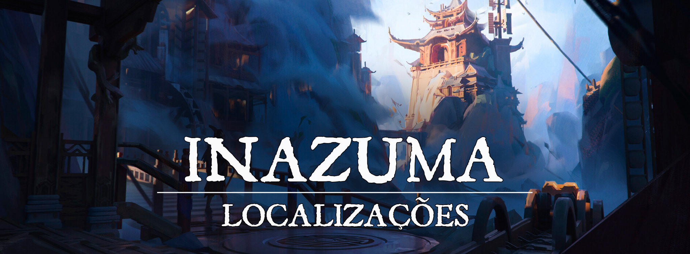

Inazuma
“A estrada em que caminham as pessoas direitas é como a luz da aurora, que brilha cada vez mais até virar o dia claro. Mas a estrada dos maus é escura como a noite; eles caem e não podem ver no que foi que tropeçaram.”
Descrição
Seguindo os caminhos de Byakko, os assentamentos do Clã do Tigre foram lentamente crescendo e formando a cidade de Inazuma, criada principalmente para guardar as tradições do Tigre Branco e para definir os limites do Domínio Espiritual de Turgon. A tradição é algo que habita fortemente no âmago dos corações do povo de Inazuma, muito por conta da grande cultura monástica que foi formada na cidade, já que os ensinamentos de Byakko sempre seguem a linha da retidão e da disciplina.
Da mesma forma que as outras cidades dos quatro kamis, Inazuma é uma das cidades mais antigas de Turgon e por conta disso também uma das mais importantes do Império. Um de seus maiores pontos de destaque é o grande Monastério do Tigre que serve tanto como templo de Byakko como casa para o Clã do Tigre.
A principal força de Inazuma são seus monges, treinados na disciplina e no caminho reto do Tigre Branco, porém, os guerreiros de Inazuma não costumam entrar em combates desnecessários, e tratam suas forças mais como uma forma de se proteger do que de atacar.
Descrição Visual:
unknown (27).png |Inazuma
{kind=link}
Acostada entre as montanhas, desde o pé até os picos existem as estruturas erguidas pelo Clã do Tigre, conectadas por pontes e caminhos entre as montanhas. É visível a facilidade de alguns dos habitantes mais habilidosos para ir de um lado ao outro, e também existem algumas plataformas maiores com mais construções erguidas. De vez em quando nuvens tocam as regiões mais altas, e revoadas de pássaros passam por perto.
Em um dos picos mais altos é visível uma enorme escultura do Tigre Branco, observando toda a cidade. É dito que é ela que protege a cidade dos espíritos malignos.
As estruturas são firmes, e a qualidade da manufatura da cidade fica clara nos menores detalhes, suas pontes e pilares são quase como se fossem parte das próprias montanhas.
Sociedade
População:
Principalmente composta por humanos e outras raças animalescas como os shifters, tabaxis e leoninos tendo os mais semelhantes a felinos como sua maioria. Mas também possui alguns descendentes de youkais e até mesmo alguns youkais vivendo na cidade.
Cultura:
A cultura de Inazuma é fortemente voltada para a espiritualidade e retidão relacionadas a Byakko, tendo suas tradições voltadas para as artes marciais e ao controle do Ki, e é por isso que tantos monges são formados na cidade. Mas a retidão em si é algo que não pode faltar em lugar algum de Inazuma, mesmo aqueles que escolheram não seguir o caminho monástico são muito influenciados por ele e seguem seus rituais à risca, buscando a iluminação espiritual.
É tido como uma lenda entre os shifters e tabaxis de Inazuma que o nascimento de uma criança com a coloração dos pelos semelhante aos do Tigre Branco é uma benção para toda a família e, consequentemente, essas crianças são levadas ao monastério quando atingem certa idade para aprenderem os ensinamentos mais profundos de Byakko.
Caráter:
Fortemente guiado pela disciplina, o povo de Inazuma é bem apegado a costumes, tradições e rituais de seus ancestrais. O povo em si admira as artes marciais e as toma como uma forma de balancear suas energias espirituais, de forma que mesmo os não combatentes entendem um pouco sobre meditação e controle dos chakras. Mas tentam sempre resolver seus conflitos internos com diálogo até porque um dos principais ensinamentos de Byakko é que a força não deve ser usada para oprimir, e sim para guiar.
Datas e Festividades:
Festival do Verão: 21 de Junho; Festival do Outono: 22 de Setembro; Festival de Inverno: 21 de Dezembro; Festival de Primavera: 21 de Março. Em cada uma das estações, Turgon tem um grande festival em honra a Inari, e a um dos Quatro Lordes.
Festival do Verão No dia 21 de Junho ocorre o Festival do Verão, dedicado a Suzaku e Inari. Por tradição, uma grande festa ocorre, e à meia-noite os turgonitas preparam lanternas de papel, escrevem desejos dentro delas, e as jogam aos céus, preenchendo-os com luzes e desejos que podem ser vistos de muito longe. O festival também é conhecido como “Festival das Lanternas”.
Festival do Outono. No dia 22 de Setembro ocorre o Festival do Outono, dedicado a Byakko e Inari. É uma época onde as últimas colheitas antes do inverno são feitas, e por isso o festival de outono é cheio de diversas comidas. Geralmente passado na cidade, em seus centros comerciais as pessoas passeiam e festejam, bebendo e comendo o quanto podem. Em Inazuma especificamente este festival é visto como um dia de gratidão, então, o povo se reúne no Monastério do Tigre para fazerem preces e agradecer a Inari.
Os guerreiros do monastério costumam neste dia fazer uma apresentação quase que teatral contando a história do ”Filho de Byakko”, um conto de uma criança que foi deixada no Monastério do Tigre quando bem nova e foi escolhida pelo kami para possuir seu poder e salvar o monastério de um grande mal.
Festival de Inverno. No dia 21 de Dezembro ocorre o festival de inverno, dedicado a Genbu e Inari. Diferente dos outros festivais, esse dia é um pouco mais calmo. Conforme a neve cai, as pessoas se dedicam a fazer uma visita ao templo de Inari, e passam um tempo com seus familiares e amigos.
Festival da Primavera. No dia 21 de Março ocorre o Festival da Primavera, dedicado a Seiryuu e Inari. Durante o dia o festival ocorre perto dos rios, lagos, e em outros lugares onde a natureza floresce. É a data onde as cerejeiras desabrocham, se despedindo do inverno.
Religião:
Assim como todo o Império das Nuvens, o povo de Inazuma majoritariamente louva a deusa Inari, a deusa raposa da prosperidade, dos andarilhos e dos espíritos da natureza, dedicando seus pedidos e orações a ela por meio de seu kami Byakko, o Tigre Branco que é patrono do Clã do Tigre.
Economia
Economia definitivamente não é o ponto forte de Inazuma, mas de certa forma as riquezas nunca foram algo muito almejado por seu povo por conta da cultura monástica. Mas, isso não quer dizer que Inazuma não produz nem consome bens do comércio. Muitos artesãos famosos de Turgon, o Império das Nuvens vieram de Inazuma, talvez por conta de seu grande foco na disciplina, os bens manufaturados de Inazuma são vistos como artigos de certo valor, já que normalmente possuem uma ótima qualidade.
Serviços:
O principal serviço a ser oferecido em Inazuma além do treinamento em artes marciais é o artesanato, de diversos tipos diferentes, desde bens de caça e pesca a utensílios domésticos e armamentos, mas nunca em uma grande quantidade, até por que o povo de Inazuma prioriza muito mais a qualidade do que a quantidade, muitas vezes demorando grandes quantidades de tempo para produzir e refinar seus bens artesanais.
Governo
Inazuma é uma cidade criada pelo Clã do Tigre e governada pelo mesmo, seu líder atual é Yamashiro Toramaru. A totalidade de cargos administrativos e postos de guarda são tomados por membros do Clã do Tigre, mas todos respondem diretamente ao imperador. Na prática, a cidade é quase independente, mas todo o povo é bem leal ao império.
A guarda da cidade é feita por uma das vertentes do Monastério do Tigre, os Guerreiros de Baekho, um grupo de monges mais focado na arte do combate com lâminas que atua ativamente como guarda da cidade patrulhando as entradas da mesma. Quando algum crime é cometido na cidade e há a necessidade de um julgamento, ele normalmente é feito diretamente pelo próprio Yamashiro.
Poderio Militar:
Os seguidores mais fiéis dos caminhos de Byakko são abençoados com uma agilidade sobrenatural, alcançando velocidades incríveis sem se cansar e isso se tornou uma grande arma dos Guerreiros de Inazuma. A grande destreza de seus combatentes alinhada à maestria das artes marciais e do controle do Ki faz com que eles sejam muito respeitados e temidos. Seus batedores conseguem informações de lugares distantes em períodos de tempo muito curtos comparados a batedores normais, e boa parte das movimentações conflituosas perto da região da cidade são percebidas e repassadas rapidamente.
Porém, não são somente os guerreiros marciais que devem ser temidos dentre os seguidores do Tigre Branco, alguns se especializam nas artes espirituais e no alinhamento divino com o kami e com sua deusa matrona Inari, sendo capazes de promover milagres de cura e convocar os trovões de Byakko para punir seus adversários.
Conflito
Da mesma forma que grande parte do Império de Turgon, Inazuma também tem seus embates com youkais corrompidos e espíritos que se deixaram levar pela corrupção, mas nada a comparar com o trabalho do Clã da Fênix em Kaen no sul de Turgon.
Analogamente, o povo de Inazuma tem uma relação não tão boa com o povo de Nefastia por conta de suas atitudes ao mínimo duvidosas. Nada que gere diretamente um conflito armado, mas definitivamente alguém que se diz vir das terras dos Pântanos sem Fim não será bem visto em Inazuma.
Organizações Relevantes
O Clã do Tigre é um dos quatro grandes clãs de Turgon e é dedicado ao Kami Byakko, ele foi fundado pela família Toramaru logo após a chegada do Kami a cordilheira, e é liderado pela mesma família até então.
O Clã em sua grande maioria é formado por shifters e tabaxis e, por conta das bênçãos de Byakko, especializado no combate ágil e a espiritualidade, tendo muitos monges e guerreiros espirituais como membros do mesmo.
Tradicionalmente o clã sempre é liderado pelo filho que mais tem características físicas que remetem a aparência do Tigre Branco, já que é dito que essas crianças são abençoadas pelo Kami e recebem parte de seu espírito.
O Monastério do Tigre (Byakko Jinja) é o grande monastério que existe dentro de Inazuma que também é usado como templo para a adoração do kami. O monastério em si é liderado pelo Clã do Tigre, mas dentro dele existem diversas vertentes monásticas que exploram as bênçãos de Byakko e Inari de formas diferentes:
-
Os Guerreiros de Baekho são uma vertente do Monastério do Tigre que alia a agilidade dos guerreiros de Byakko com o fino fio de uma lâmina, gerando combatentes mortais capazes de derrotar seus oponentes em velocidades assustadoras. Eles também são os responsáveis por manter a ordem dentro de Inazuma, atuando quase como uma polícia na cidade. Seu líder é um shifter chamado Yuki.
-
Os Tigres Espirituais são uma vertente do Monastério do Tigre que se especializou em controlar a energia espiritual de seus seres ao máximo, atingindo a capacidade de manifestar suas almas na forma de energia astral e combater seus oponentes utilizando esta energia. Seu líder é um leonino chamado Yori.
-
Os monges da Palma Trovejante são uma vertente do Monastério do Tigre que aprenderam a levar as artes marciais ao máximo, descobrindo a forma perfeita de derrubar e nocautear seus oponentes usando apenas suas mãos e seu Ki. Seu líder é um tabaxi chamado Isao.
-
Os Rugidos do Trovão são uma vertente do Monastério do Tigre que ao invés de se focar nas artes marciais, aprenderam a canalizar a energia elemental do Tigre Branco através de Inari para operar milagres e convocar o poder das tempestades. Sua líder é uma shifter chamada Denki.
Os Exorcistas de Inari são uma organização majoritariamente formada por usuários de magia. A organização tem um grande foco nos youkais, buscando manter o seu equilíbrio e purificar ou banir youkais corrompidos que constantemente assolam a região do império das nuvens. A organização tem uma base em Inazuma para auxiliar nos conflitos contra os Youkais.
Locais Relevantes
Monastério do Tigre (Byakko Jinja) é o grande monastério que existe dentro de Inazuma que também é usado como templo para a adoração do kami. O monastério em si é liderado pelo Clã do Tigre e é utilizado como moradia para o mesmo.
- Templo do Tigre é a parte mais alta e central do Byakko Jinja onde são feitas oferendas a Inari por meio do Kami, a entrada em seus locais mais profundos não é permitida a qualquer um, pois é dito que o Filho do Tigre Branco habita naquele lugar.
O Seminário do Tigre é uma construção que fica ao sul do monastério e é dedicado ao compartilhamento do conhecimento e da sabedoria, é administrado por Yori dos Tigres Espirituais e é aberto a todos que estiverem dispostos a aprender e a compartilhar o que sabe, funcionando quase como uma grande escola dentro de Inazuma.
O Distrito da Manufatura fica logo ao norte do monastério e é um lugar dedicado quase que completamente ao trabalho manual. Muitos monges passam parte de seu tempo no distrito junto com outros artesãos para desenvolver as artes do trabalho manual e da manufatura. Muito comumente, os monges da Palma Trovejante são vistos pelo distrito, já que a manufatura é considerada parte de seu treinamento.
A Casa das Presas é a sede principal da guarda de Inazuma, se localiza bem próximo do Monastério do Tigre e é considerada praticamente uma extensão do mesmo.
Cachoeiras da Pureza são um ponto conhecido por aqueles que seguem os caminhos monásticos em Inazuma para treinar suas mentes e purificar seus espíritos. É dito que essas águas são capazes de retirar quaisquer pensamentos mundanos da mente daquele que as mergulha e que suas correntezas tem a capacidade de renovar a mente de quem as suporta.
Inazuma no Zō é uma grande estátua do Tigre Branco que existe entre as montanhas de Inazuma. A estátua foi construída no alto das montanhas com o intuito de funcionar como oferenda ao Kami do trovão, Byakko, e quando uma grande tempestade vem sobre Inazuma, é possível ver os relâmpagos caindo sobre a estátua e o barulho dos trovões ecoando pelas cordilheiras como um rugido. Muitos acreditam que quando um relâmpago atinge a estátua e o trovão chega, é um sinal de que o próprio Byakko está espantando os espíritos malignos com seu rugido.
NPCs Relevantes
unknown (28).png |Yamashiro Toramaru
{kind=link}
Yamashiro Toramaru é o atual líder do clã do Tigre e governante de Inazuma. É um homem sábio, calmo, que transpassa a calmaria em sua fala, mas quando necessário é capaz de manifestar tempestades com seu rugido. Yamashiro é conhecido pelo título de Sábio do Tigre.
image.png |Yuki
{kind=link}
Yuki é o líder dos Guerreiros de Baekho. Ele é um monge guerreiro que conhecido por sua velocidade e destreza, sendo considerado um dos mais rápidos membros do monastério. Ele é uma pessoa agitada e alegre, e apesar de sua personalidade agitada, ele atua como chefe da guarda de Inazuma.
e2ab5aba923fad71343aa086046c6399.jpg |Yori
{kind=link}
Yori é o líder dos Tigres Espirituais e diretor do seminário que existe em Inazuma, considerado por Yamashiro um de seus principais conselheiros. Além de exímio combatente e mestre nas artes espirituais, ele é bem gentil e acredita que todos têm direito de adquirir conhecimento.
18c68d87be938eb24981cb201de140de.jpg |Isao
{kind=link}
Isao é o líder dos monges da Palma Trovejante e tesoureiro de Inazuma. Além de seu controle do Ki ser incomparável, Isao é um ótimo artesão que muitas vezes toma seu tempo para se dedicar ao artesanato, dizem que ele é capaz de construir praticamente qualquer tipo de bem artesanal, sendo muito bem visto pelos artesãos da cidade.
05e6334e806c2539d670a52798b914dd.jpg |Denki
{kind=link}
Denkié a líder dos Rugidos de Trovão e principal curandeira de Inazuma, ela é uma mulher de personalidade forte e às vezes até mesmo amedrontadora, mas no meio de toda força, habita uma suave gentileza que se manifesta na forma de seus milagres curativos. Analogamente ela é uma poderosa controladora dos raios e trovões.
Origem
A cidade de Inazuma, junto com as outras cidades dedicadas aos Quatro Lordes, é uma das cidades mais antigas que o próprio Império de Turgon. A cidade foi fundada pelo Clã do Tigre pouco tempo depois da vinda dos Kamis de Inari para o plano material. A princípio Inazuma era apenas um monastério isolado, criado para aperfeiçoar o corpo e a mente daqueles que desejavam seguir os caminhos do Tigre Branco, mas conforme o monastério foi crescendo, pequena cidade foi crescendo pouco a pouco até se tornar a cidade que é hoje.